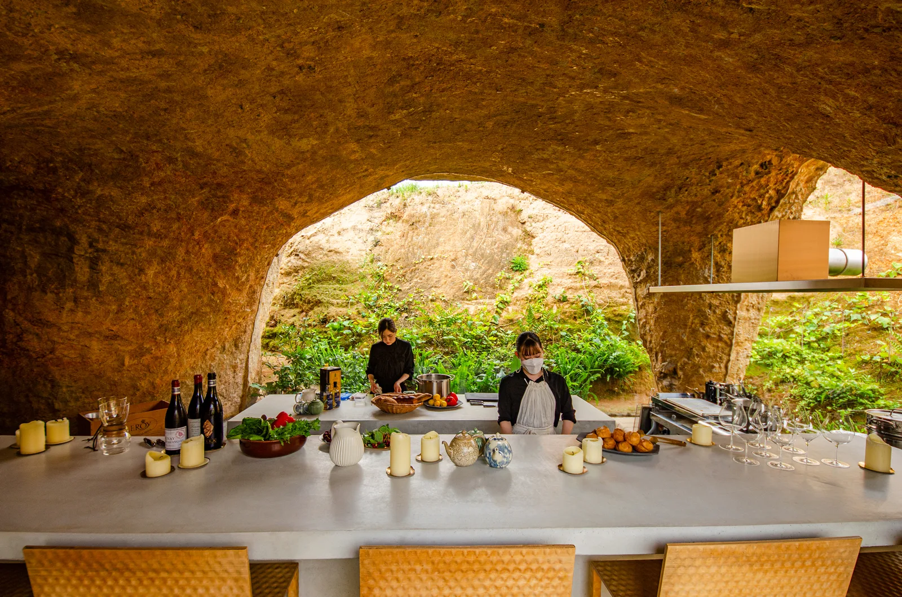
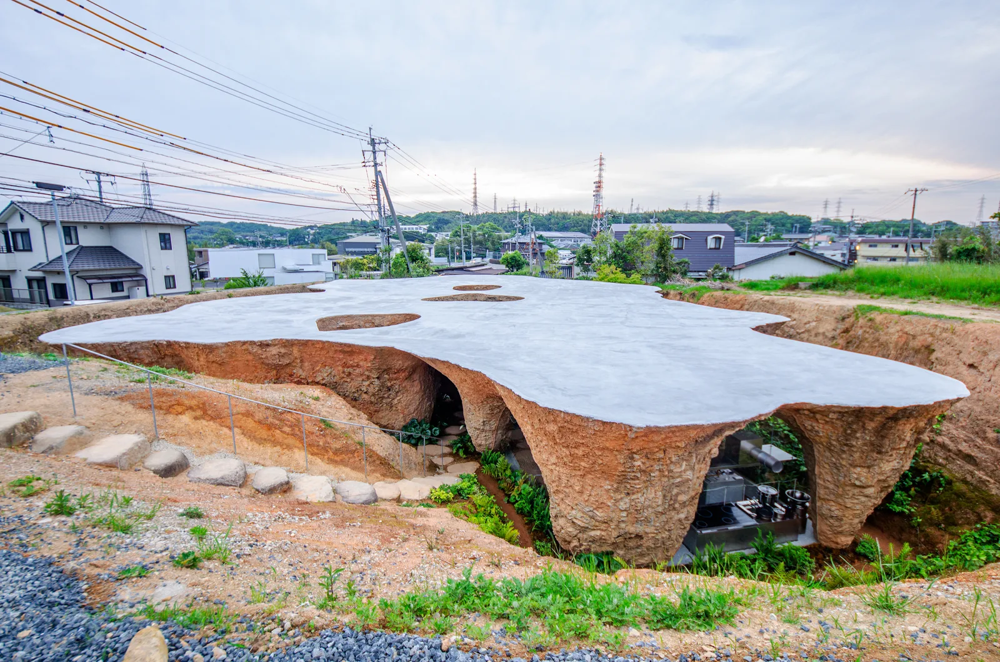
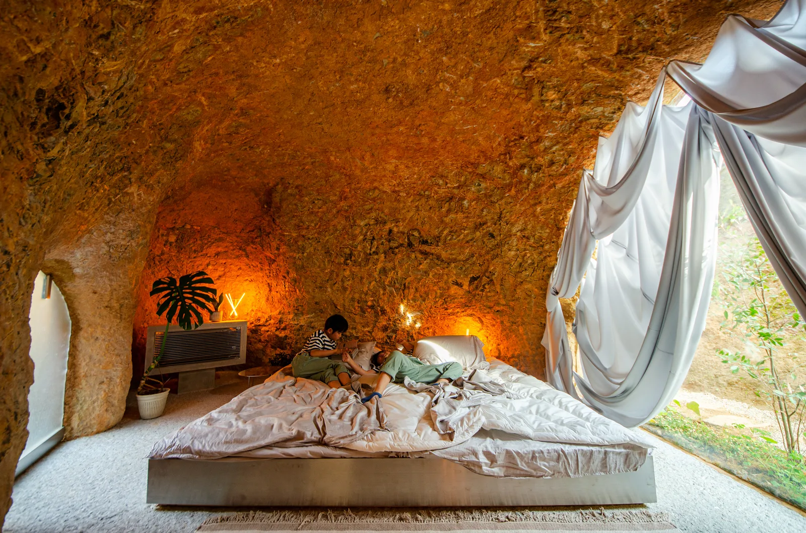
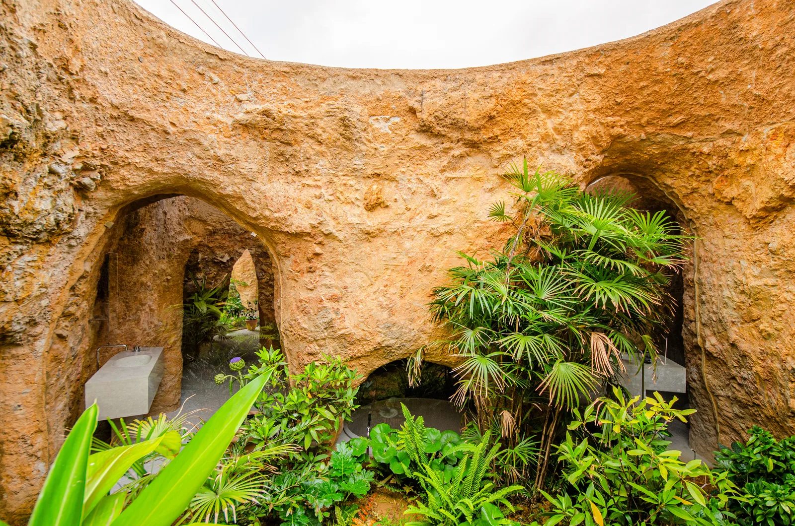
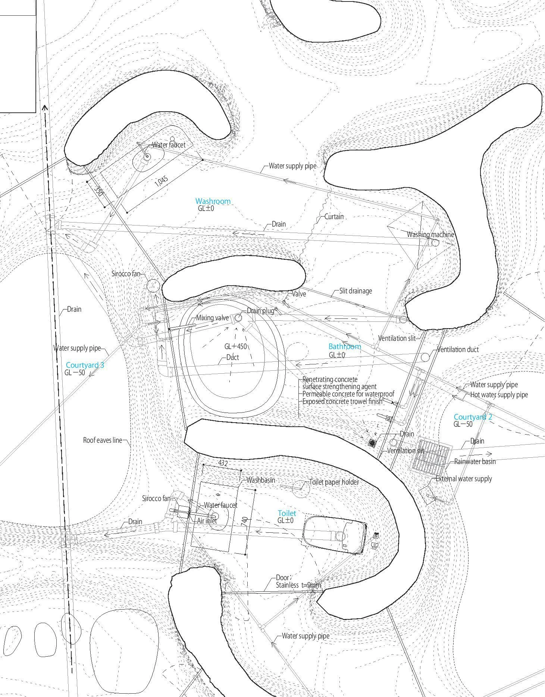
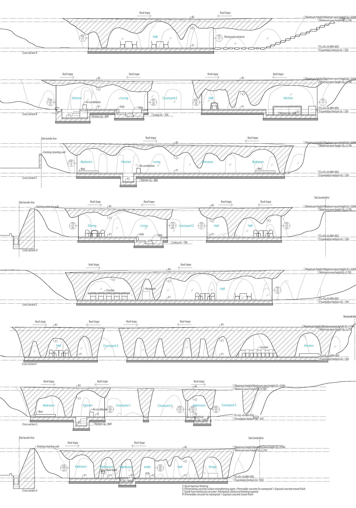

House and restaurant · 2022
House and Restaurant
Junya Ishigami
Ube, Japan
The restaurant occupies the north side and the family home the south, with three courtyards between them. Cooking, dining and receiving guests sit close to domestic life; the restaurant hall also becomes family space when closed.
Concrete was poured into excavated holes and then uncovered. Soil clinging to the resulting surfaces was retained rather than washed away, giving the new building the roughness of a cave. Furniture and glazing were adjusted to the irregular structure actually produced on site.
Junya Ishigami: architect's account published by ArchDaily ↗


Relevant connections
SHOW
Shared meals and receiving guests connect the restaurant with the life of the house.
Images and drawings / 06









